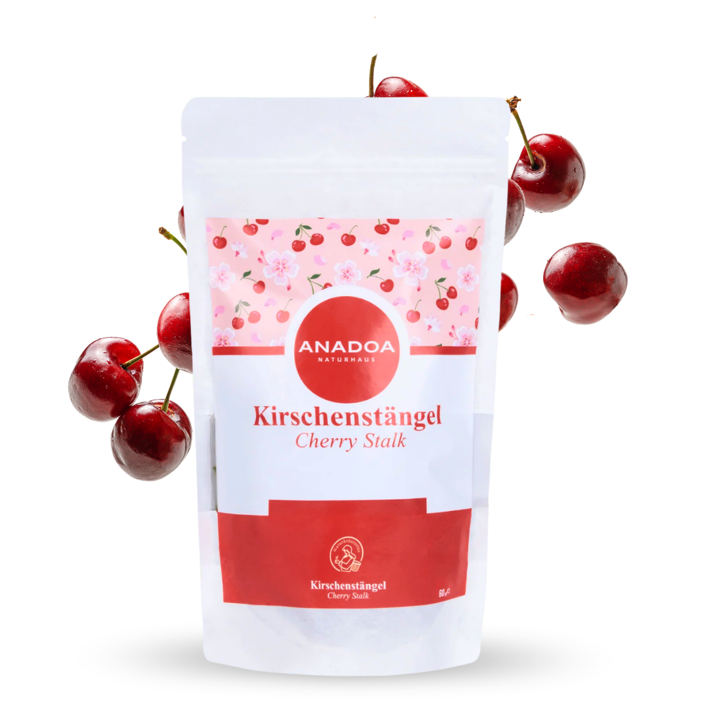

Kirschstiel Tee (Kiraz Sapı) – Das verkannte Heilmittel - Kirschstiele
In der modernen, westlichen Welt werden Kirschstiele meist achtlos in den Abfall geworfen, nachdem man die süßen, roten Früchte genossen hat. In Anatolien jedoch, und in der traditionellen osmanischen Pflanzenheilkunde, gelten die Stiele der Kirsche (Prunus avium) seit Jahrhunderten als ein extrem wertvolles, eigenständiges Therapeutikum. Man spricht hier vom berühmten "Kiraz Sapı Çayı" (Kirschstiel Tee).
Die Stiele fungieren als die Nährstoff-Versorgungsader der Frucht und speichern eine erstaunlich hohe Konzentration an pflanzlichen Wirkstoffen, die in der Frucht selbst gar nicht zu finden sind. Für die Premium-Qualität von Anadoa Naturhaus werden ausschließlich die Stiele von wild wachsenden und unbelasteten Süßkirschbäumen gesammelt, schonend im Schatten an der warmen Sommerluft getrocknet und völlig naturbelassen (ungeschnitten) verpackt, um den maximalen Erhalt ihrer wertvollen Inhaltsstoffe zu garantieren.
Starke diuretische Wirkung gegen Ödeme dank Kirschstiel Tee
Die primäre, am stärksten geschätzte Eigenschaft von Kirschstielen ist ihre stark diuretische (harntreibende) Wirkung. Sie sind ein absoluter Geheimtipp bei der Behandlung von lästigen Wassereinlagerungen (Ödemen), die oft als geschwollene Beine, Knöchel oder ein aufgedunsenes Gesicht am Morgen sichtbar werden. Solche Einlagerungen entstehen häufig durch eine salzreiche Ernährung, hormonelle Schwankungen (besonders bei Frauen in der zweiten Zyklushälfte) oder langes Stehen.
Kirschstiel-Tee stimuliert durch seinen hohen Gehalt an speziellen Flavonoiden und Kaliumsalzen sanft die Filterfunktion der Nieren. Er unterstützt den Körper dabei, überschüssiges Wasser und interstitielle (zwischen den Zellen abgelagerte) Flüssigkeiten schonend, aber sehr effektiv auszuscheiden, ohne dabei den Körper auszutrocknen oder den empfindlichen Elektrolythaushalt (wie es bei chemischen Diuretika der Fall sein kann) gefährlich zu stören.
Nierenreinigung und Harnwegsinfekte dank Kirschstiel Tee
Die spülende, diuretische Wirkung macht den Kirschstiel-Tee auch zu einem hervorragenden Begleiter bei der Vorbeugung und Behandlung von leichten Harnwegsinfekten (Blasenentzündungen). Wenn Bakterien in den Harntrakt aufsteigen, ist eine erhöhte Flüssigkeitszufuhr (Durchspülungstherapie) die wichtigste Maßnahme.
Ein Sud aus Kirschstielen reinigt die ableitenden Harnwege durch sein erhöhtes Flüssigkeitsvolumen mechanisch. Darüber hinaus enthalten die Stiele natürliche, entzündungshemmende Verbindungen und Gerbstoffe, die die gereizten Schleimhäute der Blase beruhigen können. In der anatolischen Tradition wird regelmäßig geraten, im Frühjahr eine 14-tägige Nieren-Detox-Kur mit diesem Tee durchzuführen, um Nierengrieß (Vorstufen von Nierensteinen) effektiv auszuschwemmen, bevor dieser zu größeren Steinen verhärtet.
Kirschstiel Tee als perfekte Begleiter für Diäten und Entgiftungskuren
Da der Tee massiv dabei hilft, im Gewebe eingelagerte Toxine (Giftstoffe) zu mobilisieren und über den Urin abzutransportieren, ist "Kiraz Sapı" eine der beliebtesten Zutaten für ganzheitliche Detox- und Abnehmkuren. Ein starrer, aufgeblähter Stoffwechsel macht das Abnehmen oft schwer.
Wer mit einer Ernährungsumstellung beginnt, verliert in den ersten Tagen oft viel Wasser. Kirschstiel-Tee optimiert diesen Prozess, unterstützt die Leber- und Nierenarbeit und sorgt für ein fast sofortiges Gefühl von "Leichtigkeit", wenn die drückenden, schweren Wassereinlagerungen verschwinden. Viele Anwender berichten, dass das regelmäßige Trinken dieses Tees das Bindegewebe (bei Cellulite, die oft mit Wassereinlagerungen einhergeht) optisch entlastet.
Die ideale Zubereitung und Anwendung von Kirschstiel Tee
Da Kirschstiele hart, holzig und sehr robust sind, funktioniert eine normale Zubereitung ("heißes Wasser drüber gießen und ziehen lassen") hier absolut nicht! Die fest sitzenden Wirkstoffe müssen regelrecht "ausgekocht" werden.
Die richtige Zubereitung (Dekoktion): Nehmen Sie eine kleine Handvoll (ca. 20-30 Stück) der trockenen Kirschstiele. Geben Sie diese in einen Topf mit etwa einem halben Liter (500ml) kaltem Wasser. Bringen Sie das Wasser zum Kochen und lassen Sie die Stiele bei mittlerer Hitze zugedeckt für gute 10 bis 15 Minuten sanft sieden (köcheln). Das Wasser wird sich leicht rötlich-bernsteinfarben färben. Anschließend durch ein Sieb gießen, abkühlen lassen und über den Tag verteilt lauwarm trinken. (Profi-Tipp: Wer den leicht bitter-holzigen Geschmack nicht mag, kocht im Sud ein Stück frischen Ingwer oder eine halbe Zitronenscheibe mit!)
Warum der Kirschstiel Tee von Anadoa die beste Wahl ist
Die Reinheit ist bei Detox-Produkten von absoluter Priorität. Konventionelle Kirschbäume in der Massenproduktion werden dutzende Male im Jahr mit extrem starken Pestiziden und Fungiziden besprüht, deren Rückstände sich besonders intensiv am Stiel der Frucht sammeln. Einen Tee aus konventionellen Stielen zu kochen, wäre das Gegenteil von Entgiftung.
Wir bei Anadoa Naturhaus beziehen unsere Stiele ausschließlich von wilden Bäumen oder pestizidfreien Hainen aus zertifizierten Regionen der Türkei. Unsere Stiele sind unzerkleinert, naturbelassen und behalten so ihr maximales Aroma und ihre volle therapeutische Integrität bei.
Häufig gestellte Fragen (FAQ)
Wie schmeckt
Kirschstiel Tee?
Der Geschmack ist nicht fruchtig oder süß, wie man bei Kirschen erwarten würde, sondern eher holzig, leicht bitter, erdig und sehr naturrein. Daher empfehlen wir, ihn mit Zitrone, etwas Honig oder Minze zu verfeinern.
Wie oft und
wie viel sollte ich von diesem Tee trinken?
Für eine Detox- oder Entwässerungskur empfehlen wir, den 500ml Sud über den Tag verteilt (z.B. morgens und nachmittags eine Tasse) zu trinken. Kurmäßig sollte er nicht länger als 2-3 Wochen am Stück getrunken werden.
Muss ich bei
der Anwendung von Kirschstiel Tee etwas beachten?
Ja, enorm wichtig! Da der Tee extrem harntreibend (entwässernd) wirkt, müssen Sie während der Kur unbedingt zusätzlich 2 bis 3 Liter reines Wasser über den Tag verteilt trinken, um die Nieren durchzuspülen und eine Dehydrierung zu vermeiden.
Dürfen
Schwangere Kirschstiel Tee trinken?
Da starke Entwässerungskuren in der Schwangerschaft den sensiblen Elektrolythaushalt und den Blutkreislauf belasten können, raten wir Schwangeren von der Verwendung ab.
Kann ich die
ausgekochten Kirschstiele ein zweites Mal verwenden?
Nein. Nach einer 15-minütigen Dekoktion (Auskochung) sind die wasserlöslichen Inhaltsstoffe vollständig in das Teewasser übergegangen. Die Stiele sollten danach kompostiert werden.